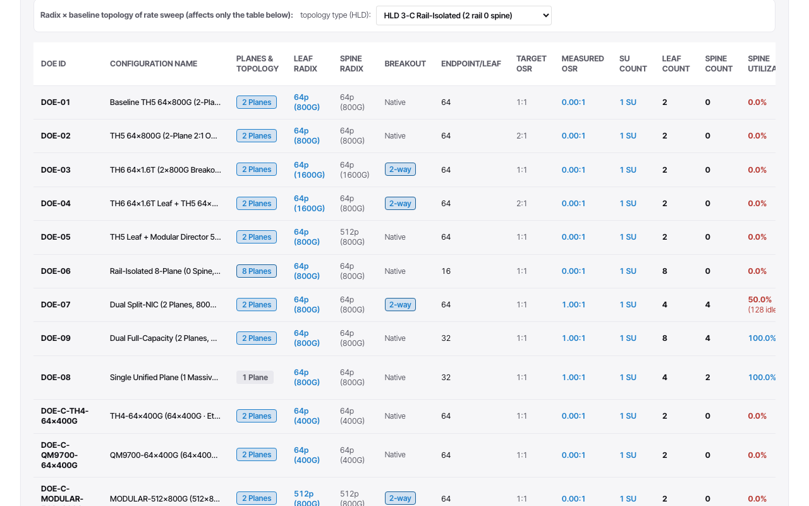
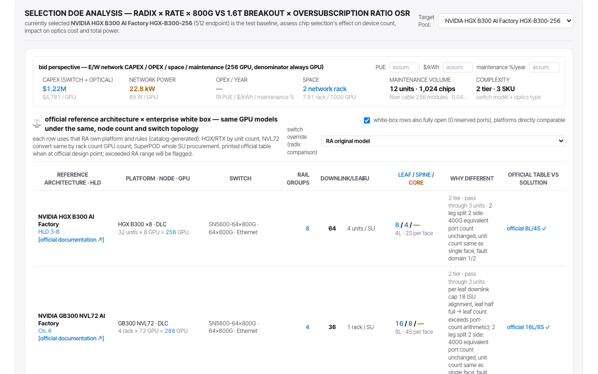
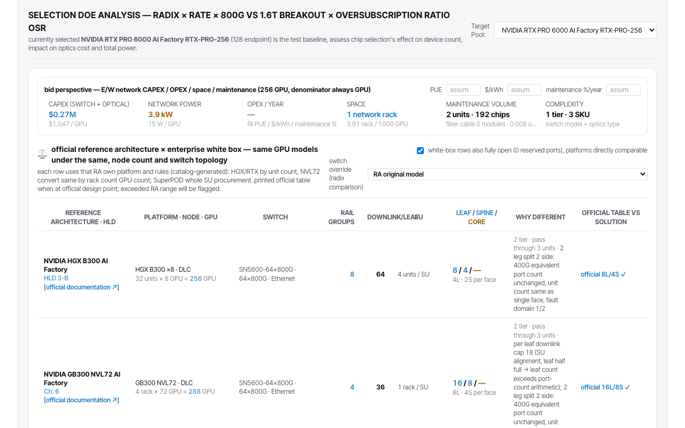
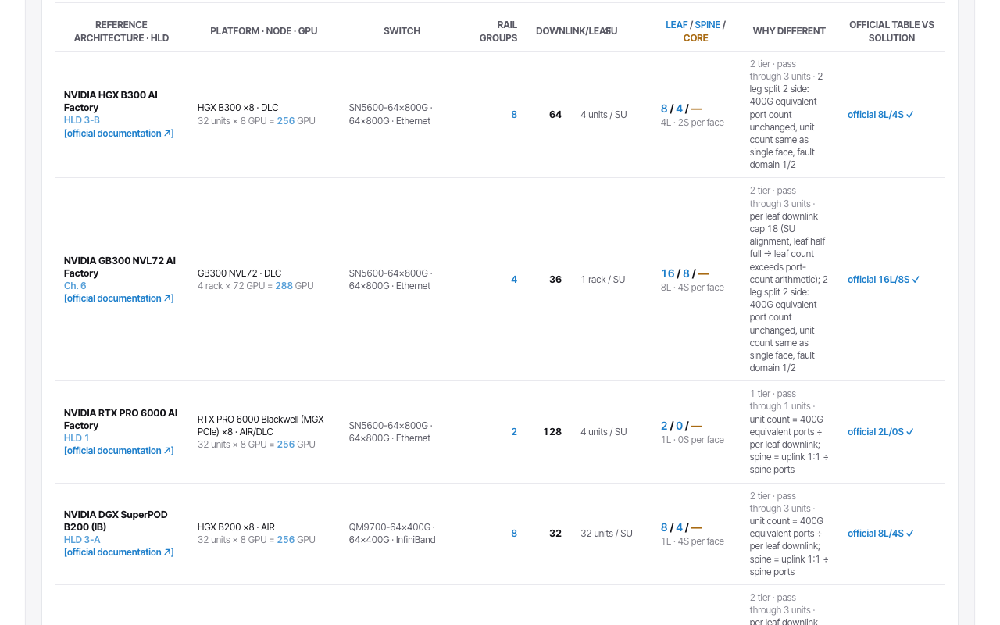
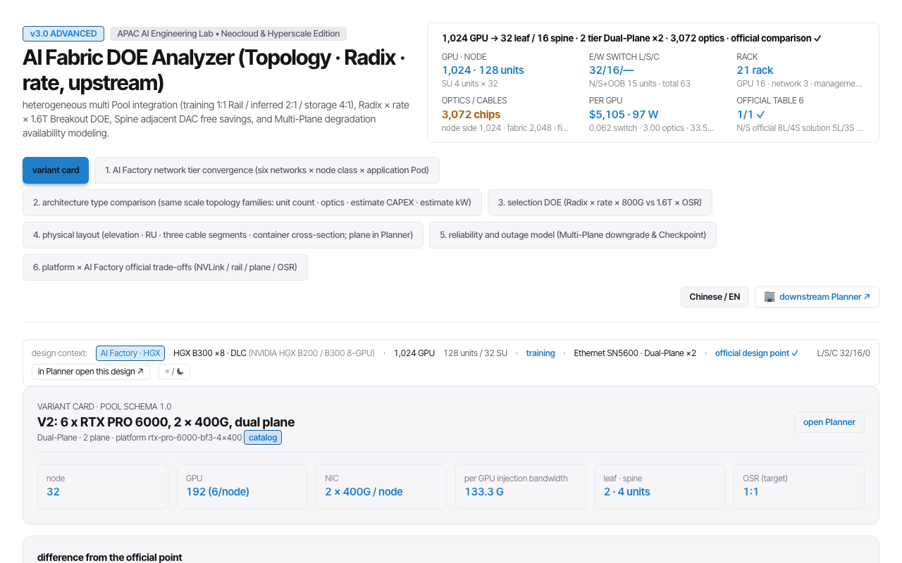
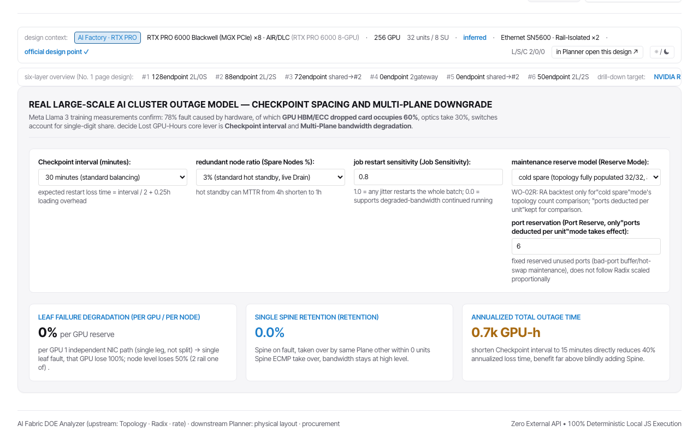
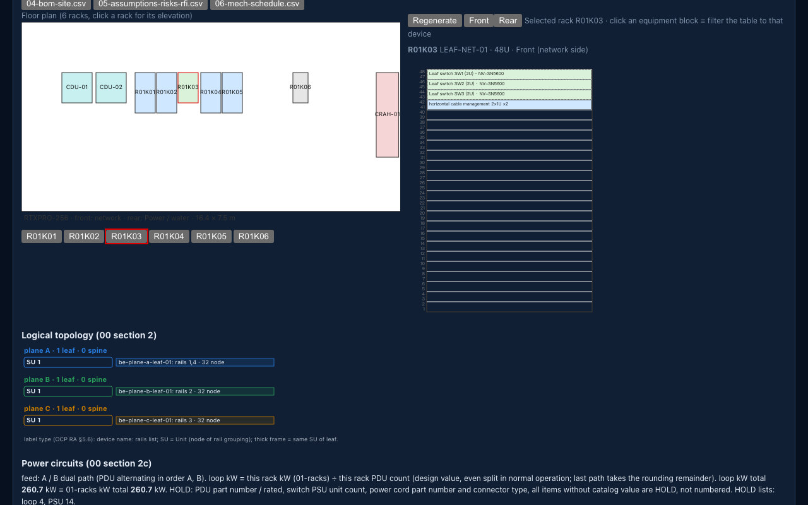

A generic two-rack-unit server takes three or six PCIe GPUs. The question that follows is how many network cards to give it, and whether to wire them rail-optimized or as two separate planes. Most answers start from the topology. This chapter starts one step earlier: can the GPUs inside the node reach each other without the network?
What rails and planes mean
Rail-optimized means the first NIC of every node plugs into the first leaf switch, the second NIC into the second leaf, and so on, so that a GPU's peers in other nodes are one hop away on its own rail. Dual-plane means two fabrics that never touch each other, each node holding one NIC on each plane. Both describe NICs, not GPUs: a rail is a NIC position, so a server with two GPUs per NIC has half as many rails as GPUs.
Two scales matter and must not be mixed. Injection bandwidth per GPU is the NIC rate divided by the number of GPUs sharing that NIC; it is set by the server. Oversubscription ratio is the leaf's downlink bandwidth divided by its uplink bandwidth; it is set by the fabric, and every official training reference keeps it at one to one. The variants in this chapter change the first scale, not the second.
In the tool, these definitions are the topology selector of the selection tab. Load the RTX PRO 6000 official point, read which topology NVIDIA chose for it, then step through the other entries: each sweep row shows how many planes, leaves and spines that wiring needs for the same servers.

In the tool: tab 3 (selection DOE) on the RTX PRO 6000 official point. The topology selector stands at the official choice, HLD 3-C rail-isolated (two rails, no spine); its other entries are the choices this section defines (rail-optimized, split-NIC dual plane, dual full-capacity, pooled), and every sweep row states its plane count and spine count.
Open tab 3 on the RTX PRO 6000 point ↗
Carries forward: The plane count chosen here is the planeCount field of every variant record in this chapter.
SXM has a domain, PCIe has a bus
An SXM server binds its eight GPUs into one NVLink domain through NVSwitch. Traffic between those GPUs never leaves the board, so the network only carries traffic to other nodes, and one rail per GPU is the natural fit. A PCIe server has no such domain: RTX PRO cards have no NVLink at all, and H200 NVL cards bridge only two or four of them. Inside the node, traffic between GPUs crosses the PCIe switch and the CPU. That is why NVIDIA's own PCIe reference point gives each pair of GPUs one NIC rather than one each.
The tool shows the difference without opening a datasheet. Load the HGX B300 official point and then the RTX PRO 6000 point in the same tab: both hold the same number of GPUs, and the header counts the NIC endpoints each one needs.


Same tab, two official points of 256 GPUs; the header counts NIC endpoints. Top: the HGX B300 point, 512 endpoints, because every GPU has its own 800G NIC split into two 400G legs. Bottom: the RTX PRO 6000 point, 128 endpoints, two GPUs per 400G NIC.
HGX B300 point ↗ RTX PRO 6000 point ↗
Carries forward: That GPUs-per-NIC ratio is the column the next table compares across the four families.
Four official design points
The first table puts the four NVIDIA reference families side by side at one design point each: the DGX SuperPOD on InfiniBand, the GB300 NVL72 AI Factory, the HGX B300 AI Factory and the RTX PRO 6000 AI Factory. The columns that matter are the NVLink domain, the number of GPUs per NIC and the injection bandwidth that follows; the switch counts are NVIDIA's own tables, reproduced by the tool.
| Family | Source | Nodes | GPUs per node | NVLink domain | NICs × rate | GPUs per NIC | Injection per GPU | Topology | Target OSR | Leaf / spine (official) | Leaf / spine (tool) |
|---|---|---|---|---|---|---|---|---|---|---|---|
| DGX SuperPOD B200 (InfiniBand) | Vendor · Table 4 compute fabric switches per SU count, read 2026-09-16 | 32 | 8 | 8 | 8 × 400 Gbps | 1 | 400 Gbps | Rail-Optimized, 8 rail groups, 1 plane(s) | 1 | 8 / 4 | 8 / 4 |
| NVL72 AI Factory (GB300) | Vendor · Table 6 Compute Node (Node East/West) and Switch Component Count, read 2026-09-11 | 2 | 72 | 72 | 72 × 800 Gbps | 1 | 800 Gbps | Dual-Plane, 4 rail groups, 2 plane(s) | 1 | 8 / 4 | 8 / 4 |
| HGX B300 AI Factory | Vendor · Table 6 Compute (Node East/West) and switch component count, read 2026-09-11 | 32 | 8 | 8 | 8 × 800 Gbps | 1 | 800 Gbps | Dual-Plane, 8 rail groups, 2 plane(s) | 1 | 8 / 4 | 8 / 4 |
| RTX PRO 6000 AI Factory (PCIe) | Vendor · Table 6 Compute (Node East/West) and switch component count, read 2026-09-11 | 32 | 8 | 0 | 4 × 400 Gbps | 2 | 200 Gbps | Rail-Isolated, 2 rail groups, 1 plane(s) | 1 | 2 / 0 | 2 / 0 |
Each official row can be rebuilt in the tool before it is trusted. The reference-architecture table derives every leaf and spine count from the platform rules and prints NVIDIA's own figure next to it; a tick means the two agree.

The tool's reference-architecture table rebuilds each official leaf and spine count from the platform rules and marks it against NVIDIA's own table (for example official 8L/4S ✓). The four rows used in this chapter open directly:
DGX SuperPOD B200 ↗ GB300 NVL72 ↗ HGX B300 ↗ RTX PRO 6000 ↗
Carries forward: The RTX PRO 6000 row is V0, the reference every variant in the next section is measured against.
The same thirty-two servers, five ways
The second table holds the number of servers fixed and changes what is inside them. The official point is the reference. Three variants use the same RTX PRO card with three or six GPUs and a different NIC count. One variant swaps in a consumer card; it is marked as an assumption and takes no part in the conclusion, because no public statement about its peer-to-peer or GPUDirect support was found. The static prerequisites for each row, such as the PCIe lane budget of a given CPU generation or the number of sixteen-lane slots in the chassis, are withheld until the vendor pages behind them are read.
| Variant | Pool / tool | GPUs per node | NICs × rate | GPUs per NIC | Topology | Injection per GPU | Leaf / spine | Actual OSR (downlink ÷ uplink) | Endpoint links | Status | Static prerequisites |
|---|---|---|---|---|---|---|---|---|---|---|---|
| V0 RTX PRO 6000 Blackwell Server Edition | pools/V0.json Open in the tool Racks in the planner | 8 | 4 × 400 Gbps | 2 | official: collapsed leaf, rail-isolated | 200 Gbps | 2 / 0 | 0 | 128 | catalog | Reference point as published. |
| V1 RTX PRO 6000 Blackwell Server Edition | pools/V1.json Open in the tool Racks in the planner | 3 | 3 × 400 Gbps | 1 | rail optimized (3 rails, shared spine) | 400 Gbps | 3 / 2 | 0.5 | 96 | catalog | Not shown. No vendor page for the PCIe lane budget, peer-to-peer statement or slot count was read. Added: once those vendor pages are read and bound to the registry. |
| V2 RTX PRO 6000 Blackwell Server Edition | pools/V2.json Open in the tool Racks in the planner | 6 | 2 × 400 Gbps | 3 | dual plane (one NIC per independent fabric) | 133.33 Gbps | 2 / 4 | 0.5 | 64 | catalog | Not shown. No vendor page for the PCIe lane budget, peer-to-peer statement or slot count was read. Added: once those vendor pages are read and bound to the registry. |
| V3 RTX PRO 6000 Blackwell Server Edition | pools/V3.json Open in the tool Racks in the planner | 6 | 6 × 200 Gbps | 1 | rail optimized (6 rails, shared spine) | 200 Gbps | 6 / 4 | 0.25 | 192 | catalog | Not shown. No vendor page for the PCIe lane budget, peer-to-peer statement or slot count was read. Added: once those vendor pages are read and bound to the registry. |
| V4 consumer gaming card (no platform record in the catalog) | pools/V4.json Open in the tool Racks in the planner | 6 | 2 × 400 Gbps | 3 | dual plane (one NIC per independent fabric) | 133.33 Gbps | 2 / 4 | 0.5 | 64 | assumption, not used in conclusions | Not shown. No vendor page for the PCIe lane budget, peer-to-peer statement or slot count was read. Added: once those vendor pages are read and bound to the registry. |
Estimated cells: ai-fabric DOE fabricSolver.js solvePoolFabric / solveClusterDesign, DEFAULT_SOLVER_ASSUMPTIONS, build e23bd1f5; official rows use presets ra-spb200-256, ra-nvl72-144, ra-hgx-b300-256, ra-rtx-pro-256. Vendor cells name the reference page and read date.
Every row of this table is one record, and the record opens as a card in the tool. The card repeats the row's numbers, prints the difference from the official point line by line, and exports the same record to the planner, which is the second link in the Pool / tool column.

Variant card V2 (six RTX PRO 6000, two 400G NICs, dual plane): the numbers of its table row and the difference from the official point, line by line. Every row of the table opens its own card.
Carries forward: Each card's open Planner button exports the pool record that the planner reads in the last section.
The other side
Rails cost switches: for the same thirty-two servers, the rail-optimized variants need more leaf and spine switches than the dual-plane ones, and that cost sits in the table. Dual-plane buys something else: when one plane fails, the node keeps the other NIC and half of its bandwidth, while a rail-optimized fabric shares one spine group across all rails, so a spine failure touches every rail at once. The choice is therefore not only how many switches to buy but how the cluster should degrade.
The reliability tab puts a number on that difference. On the official point it states what one leaf failure costs each GPU and each node; the variant cards carry the same line for their own wiring.

Tab 5 (reliability) on the official point: when one leaf fails, each GPU on it loses its only path and the node loses half its bandwidth, the dual-plane behaviour described above.
Carries forward: The same per-node loss is printed on every variant card as single leaf failure degradation.
Reproduce a row in the tool
Take variant V1 and rebuild it in the DOE input panel, one field at a time. Enter the node count: 32. Enter the GPUs per node: 3. Enter the backend NICs per node: 3. Set the endpoint rate to 400 Gbps. Choose rail-optimized as the topology, with one plane per rail: 3. Leave the target oversubscription at one to one and keep the official switch model. Nothing else is changed from the RTX PRO reference point; the pool record in the repository lists every field.
Now read the tool's answer against the table. The cluster has 96 NIC ports, one per GPU, so each GPU gets 400 Gbps of injection bandwidth. The fabric needs 3 leaf switches, one per plane, and 2 spine switches shared by all rails, joined by 96 leaf-spine links. The oversubscription ratio shows as 0.5, below one, for the reason given under the tables. If any figure differs from the row above, the chapter or the tool is wrong, and the discrepancy is worth reporting.
The last step leaves the network tool. The open Planner button on the V1 card exports the pool record; opened in the planner, the same thirty-two nodes are placed on a floor plan and the leaf switches into the network rack, the starting point of the next chapter.

The planner, opened with the pool record that variant card V1 exports: thirty-two nodes with three NICs each, placed on the floor plan, and the network rack elevation holding the three leaf switches of the card, one per rail.
Carries forward: This rack layout is the input of the next chapter, which asks how many racks and coolant distribution units each cooling method needs.
How to read the tables
Vendor cells name the reference page and the date it was read. Estimated cells come from the author's sizing tool and name its build. The oversubscription ratio in the variant rows is below one because the variants keep the official switch model, whose uplinks run at twice the NIC rate; it is reported as the tool computes it. Rows marked assumption are shown for completeness and are not used in any conclusion.